Avant de commencer
- Ouvrez la fiche du demandeur (Chercher un bénéficiaire) et vérifiez son réseau familial : les enfants et les personnes « au foyer » sont repris automatiquement.
- Ayez sous la main la date de signature du demandeur, son budget et les justificatifs scannés.
1Ouvrir une nouvelle AFASE
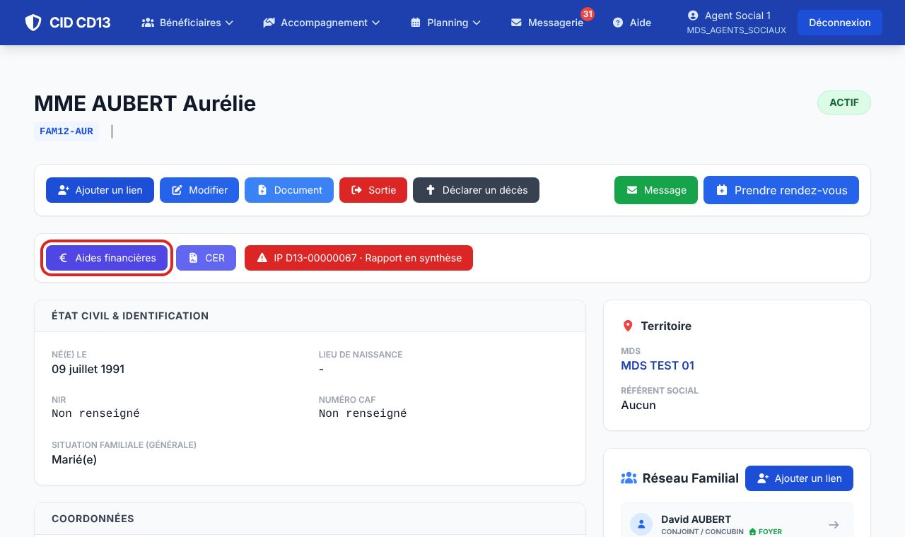
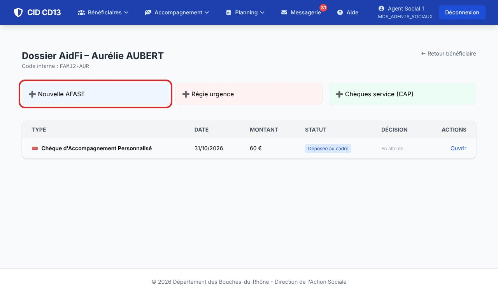
- Sur la fiche, cliquez sur Aides financières : la liste de ses aides s'affiche.
- Cliquez sur Nouvelle AFASE. Le formulaire compte quatre onglets : Contexte, Demande, Évaluation, Budget.
2Onglet « Contexte » : le demandeur et les enfants
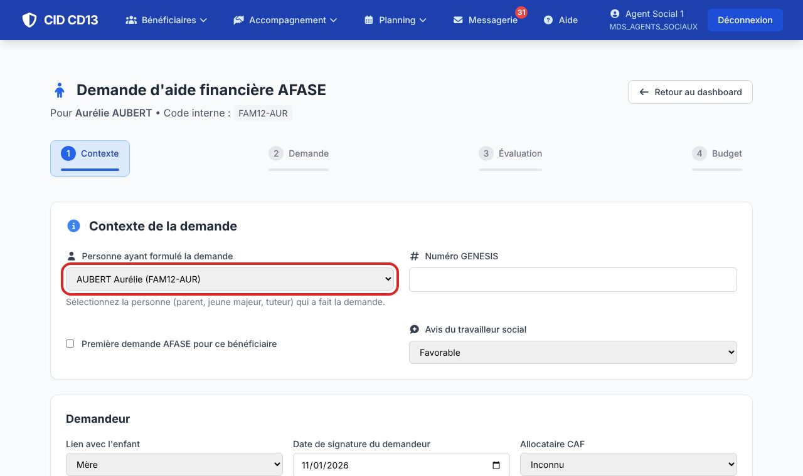
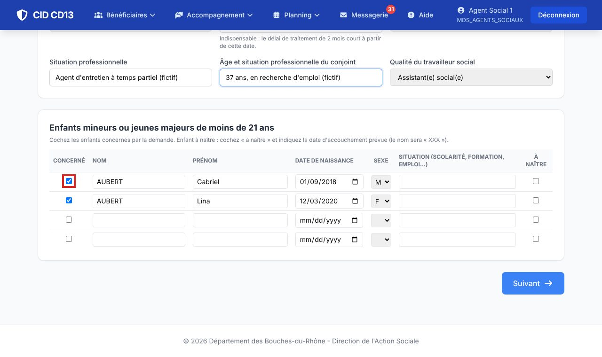
- Choisissez la personne qui fait la demande et son lien avec l'enfant (mère, père, tuteur, femme enceinte, jeune majeur…).
- Saisissez la date de signature du demandeur : elle est indispensable, le délai de 2 mois court à partir de cette date.
- Complétez l'avis du travailleur social, votre qualité, l'allocataire CAF et les situations professionnelles.
- Dans le tableau des enfants, cochez ceux qui sont concernés. Un enfant à naître se déclare avec la case « à naître » et la date prévue d'accouchement.
3Onglet « Demande » : montant et objet
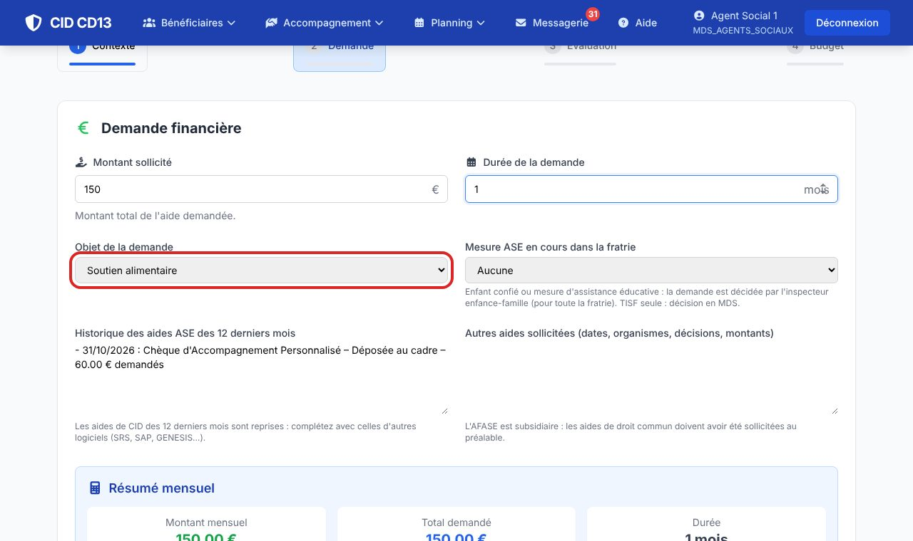
- Indiquez le montant mensuel et la durée (en mois).
- Choisissez l'objet de la demande : le référentiel de la note de service s'affiche (conditions, aides de droit commun à mobiliser avant).
- Cochez les aides de droit commun déjà sollicitées, et renseignez une éventuelle mesure ASE dans la fratrie : enfant confié ou assistance éducative, la décision revient alors à l'inspecteur enfance-famille.
- L'historique des aides des 12 derniers mois est repris automatiquement de CID ; complétez-le si besoin.
4Onglet « Évaluation » : la situation
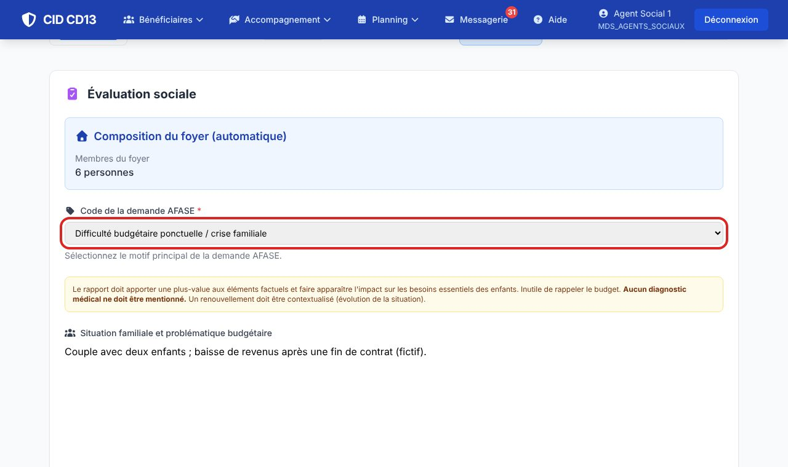
- Choisissez le code de la demande et décrivez la situation familiale, l'analyse, la justification et le plan d'action élaboré avec la famille.
- Indiquez le degré d'adhésion de la famille et, si besoin, l'affectation ciblée de l'aide.
5Onglet « Budget » : ressources et charges
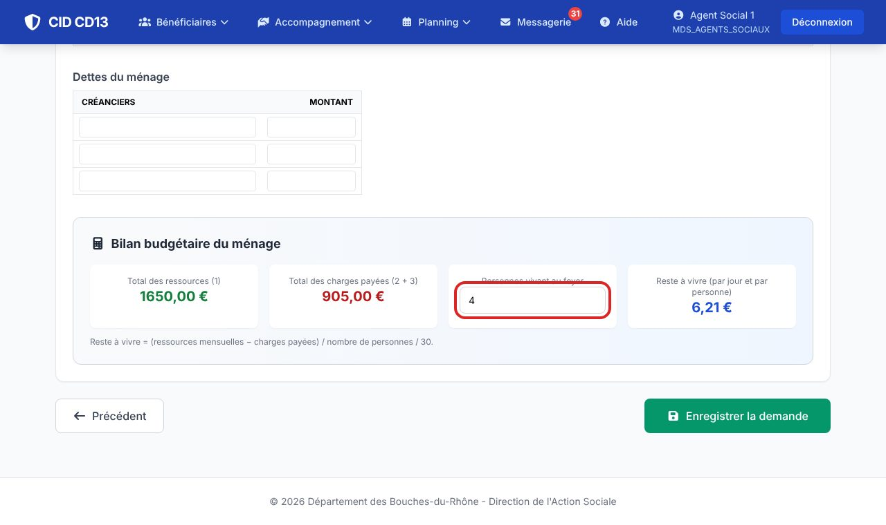
- Saisissez les ressources mensuelles (demandeur, conjoint, autres) et les charges, en distinguant payées et non payées ; ajoutez les dettes.
- Vérifiez le nombre de personnes au foyer (proposé d'après la famille) : CID calcule le reste à vivre par jour et par personne.
- Cliquez sur Enregistrer la demande : elle est créée en brouillon.
6Joindre les pièces
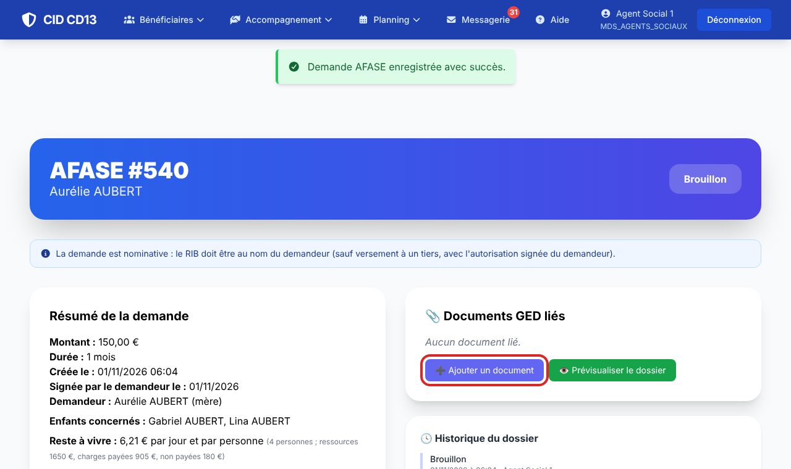
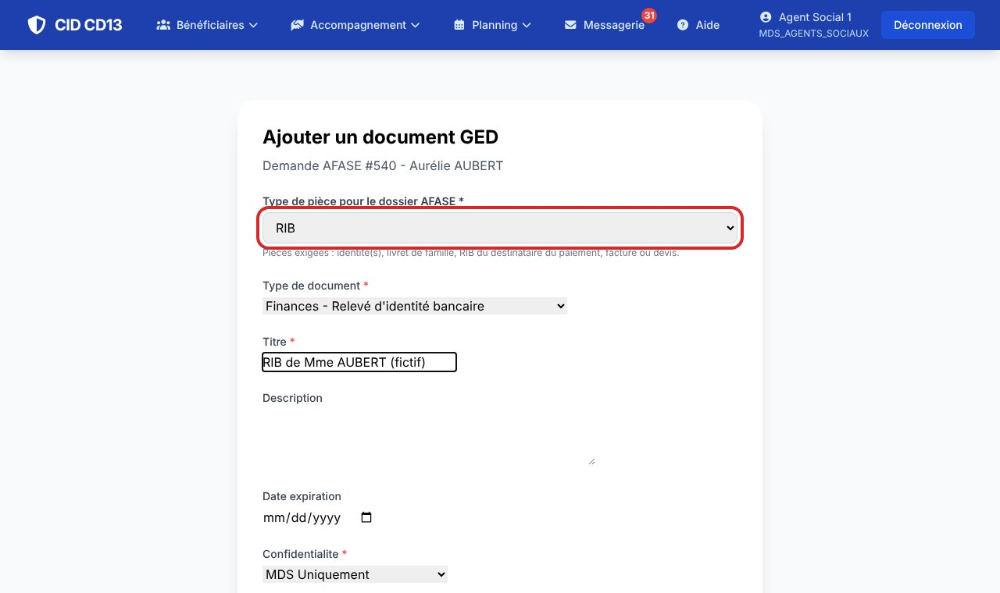
- Sur la demande, cliquez sur Ajouter un document.
- Choisissez le type de pièce (RIB, identité, livret de famille, domicile, facture ou devis…), le type de document, un titre, puis le fichier, et cliquez sur Uploader et lier.
- Recommencez pour chaque pièce : pièces d'identité du demandeur et des enfants, livret de famille (ou attestation CAF/MSA), RIB au nom du destinataire, justificatif de domicile de moins de 3 mois, justificatif lié à l'objet de la demande.
Pour corriger la demande avant de la déposer : bouton Modifier la demande.
7Finaliser et déposer au cadre
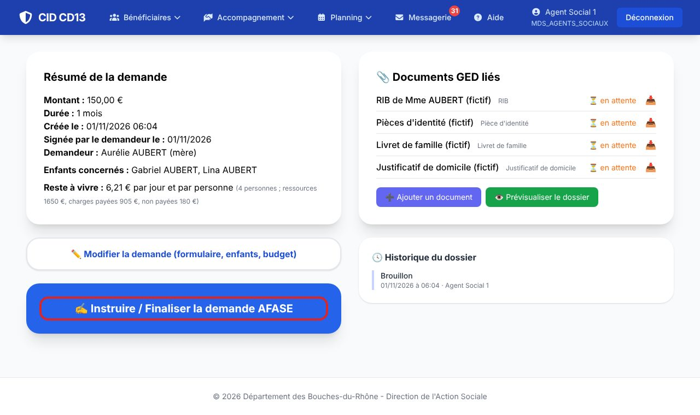
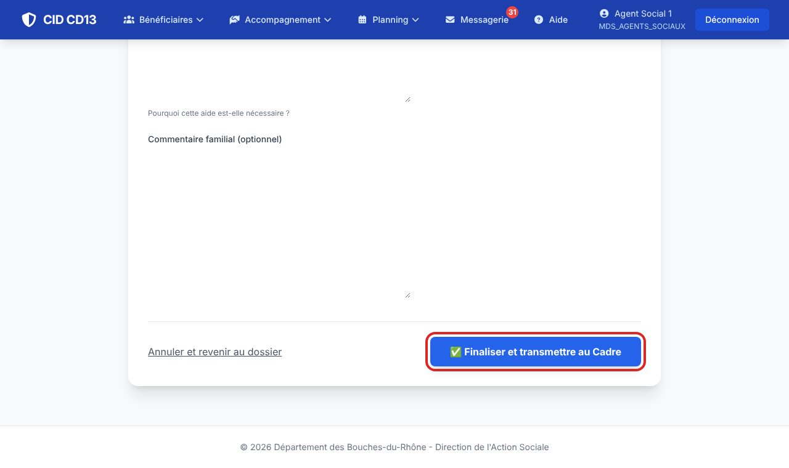
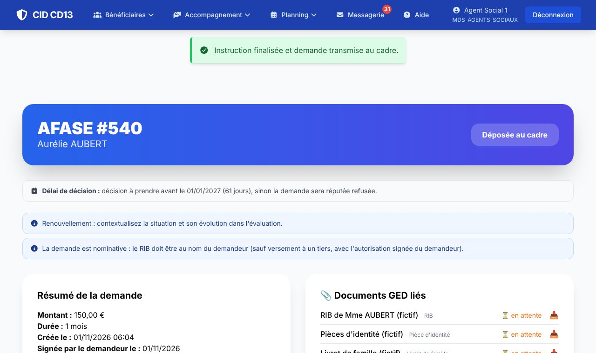
- Cliquez sur Instruire / Finaliser la demande AFASE.
- Relisez l'analyse et la justification, ajoutez le commentaire de la famille, puis cliquez sur Finaliser et transmettre au Cadre.
- La demande passe au statut Déposée au cadre ; le cadre (ou l'inspecteur, en cas de mesure ASE) reçoit un message CID.
Bon à savoir
- La demande est réputée refusée 2 mois après la date de signature du demandeur : les échéances s'affichent sur la fiche et sur le tableau du cadre, et CID envoie des rappels.
- Les encadrés bleus et orange de la fiche sont des points de vigilance (autre AFASE ce mois-ci, demandeur hors Bouches-du-Rhône, renouvellement…) : ils n'empêchent rien, le cadre décide.
- La demande est nominative : le RIB doit être au nom du demandeur, sauf versement à un tiers avec son autorisation signée.
Et ensuite ?
Cliquez sur une image pour l'agrandir. Le cadre rouge montre où cliquer ou quoi remplir. Toutes les données affichées sont fictives.